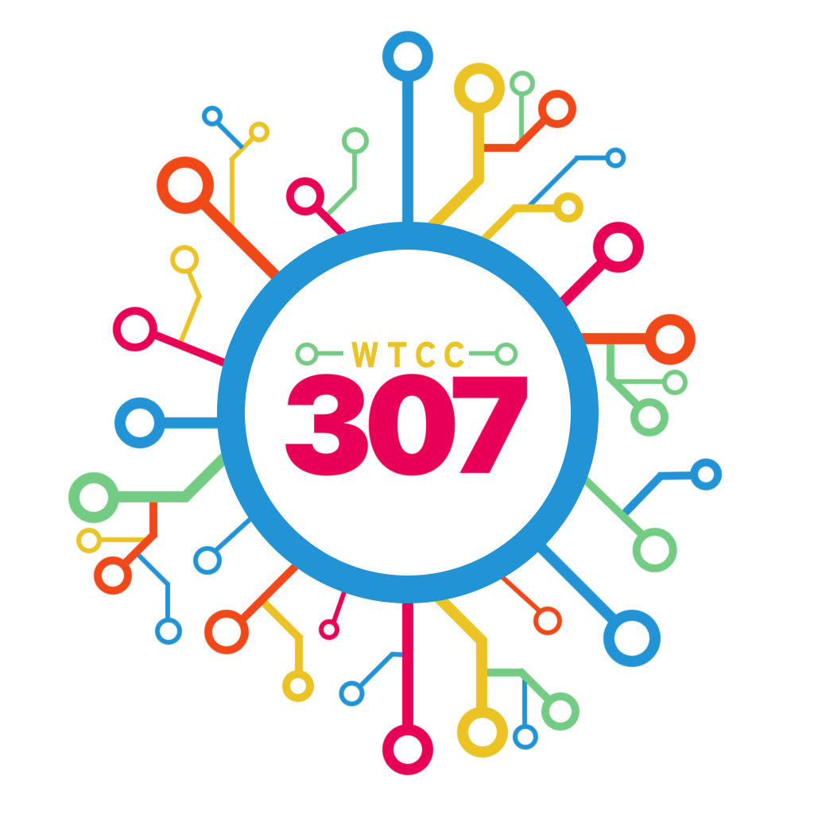
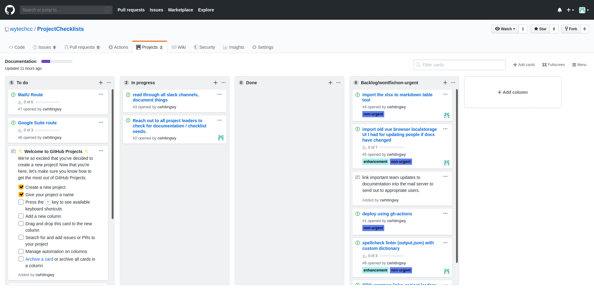

About the Wyoming Technology Coronavirus Coalition's Checklists 
Documentation for the WYTechCC volunteers to prevent duplication & repeating ourselves.
This is no replacement for the main website, wytechcc.com
This is not a good place for todos, use Github Issues, Github Projects, Trello, or Google Sheets to manage & assign those.
Why are these docs public? It's better to have one public conversation (e.g. a slack thread or doc site) than hundreds of PMs.
Protip. Hit the search bar to quickly find something.

I Want to help WYTechCC, what do I do?
- Fill out the WYTechCC Form
-
Sign up for the Slack team
- fill out your bio
- post to introductions about who you are, what you're up to
- fill out the volunteer form
- Check the Volunteering section to your left.
- Add our events calendar to your apps.
Point Persons
A list of contacts for any particular project
You can also find the project lead in the topic of any slack channel.
How You Can Help
Ask the point person how they'd like to be contacted, and what details we can list publicly on this site. DO NOT list our external contacts (e.g. from the spreadsheet)
Every project needs a leader - don't leave anything abandoned or disorganized.
I Have An Idea
Submit ideas to this google form
The List
still adding leaders to this list... possible duplicate of slack channels, can just list there.
- Leadership (talk to the channel leader that best describes your question instead)
- Ryan Alford
- Louis Wingerson
- Jerad Stack
- Tyler Kerr
- Lars Kotthoff
- Emma Jane Alexander
- Jeremia Gillis
- catchall (leadership) - ET (last pickings)
- Outreach
- Social Media - Nicholas Giraldo
- Service Industry Tips - Troy Wolfe troy@wolfecs.biz
- volunteers - Britney Wallesch
- Getting Help
- requests - Susann Robbins
- resources - Susann Robbins
- jobs-hire-me - Esther Gonzales - if you were laid off because of COVID
- jobs-openings - Esther Gonzales
- Supplies
- Medical Supply Drives - Samantha Alford
- Sewing - Melanie Shovelski
- 3d printed ventilators -
- CNC / 3D Printer Coordination - Tyler Kerr tkerr1@uwyo.edu
- Northwest: David Maulik
- Northeast: Spencer Kuzara
- Southwest: Victoria Evans
- Central: Rhiannon Jakopak
- Southeast: Zach Hunter & Brayton Tolman
- Code Projects - Alex Kirby
- This Checklist - Cameron Whiting - all volunteer documentation
- The Website wytechcc.com - Ryan Alford on slack.
- Education Mobile App - unassigned, in planning @ occupation-coder
- Stitches telehealth app - Jason Hammock
- GIS - Lee Pepper
- Folding@Home team # 257578 - Troy Wolfe troy@wolfecs.biz
Volunteering
There are lots of ways you can help out.
We currently have:
- a sewing group
- a programming group
- 3D printing / makerspaces
- a medical supply coordinator
and we currently need:
- filament / supply chain vendors badly
External to the group there's the:
- Wyoming Department of Homeland Security medical supply drive
How to comfort someone
todo: add recommendations from a therapist
I Want To Help
See the projects under Volunteering!
- I Can Sew - Lead: Melanie Shovelski
- Check the pinned messages in the
skill-sewerschannel
- Check the pinned messages in the
- I Have a 3D Printer - Lead: Tyler Kerr
- I have a computer - About Folding@Home's COVID efforts - Folding@Home team # 257578 - Lead: Troy Wolfe
- I'm a vendor - talk to Tyler Kerr
- we need PETG, polycarbonate, and 0.020"/0.030" thin transparent plastic (see 3D printing for details)
- I Have a Computer Lab
- We're working on automation scripts to help you rapidly deploy folding@home and join the team
Code Projects
Lead: Alex Kirby
Check our GitHub Issues (not all code projects are there, yet)
- Projects with users under 13 (e.g. educational apps) need to comply with COPPA
- run website changes through an accessibility checker.
-
Consider what happens when your javascript is broken
- add CI to the buildchain and that won't be a problem
- Consider hallway testing with users to verify things make sense. It's better for the UI to make sense than have loads of confused users asking for help.
GIS Projects
Lead: Lee Pepper (Code lead: Alex Kirby)
- COVID 19 Hub - GIS hub
- ArcGIS Coronavirus Response help
- State Tableu data feed - the GIS project updates from this authoritative feed automatically.
If you would like to make queries off of an existing postgis mapnik/nominatim server, ping Cameron Whiting. the data is slightly out of date.
If you'd like current OSM shapefiles for wyoming, see geofabrik
3D Printing
Lead: Tyler Kerr - tkerr1@uwyo.edu
Main Page: https://wytechcc.com/projects/3d-printing/
The current, coordinated list of 3D printers & CNC routers being used around the state is in this Google Spreadsheet
There are 68 pieces of equipment in total. They include PLA, ABS, PETG, Resin, PC-ISO, Nylon, Stainless steel, CNC (48x96), & a laser etcher.
Getting Materials to Hospitals
Hospitals will vet and select the 3D files they want printed. See "My Organization Needs Help" on the sidebar.
the coordinated effort by the government (FDA, VA, America Makes) approves PPE designs here:
https://3dprint.nih.gov/collections/covid-19-response
Needs - Supply Chain Bottlenecks!
-
If you know a vendor for PETG, polycarbonate, or 0.020"/0.030" thin transparent plastic, add them to the Vendors and Material Suppliers section of the statewide equipment and resources sheet
-
hospitals seem to want PETG or ABS, PETG is a bit brittle with the current hole placements.
-
see also 3dfuel
Leaders
Regional Team Leaders for equipment requests are:
- Northwest: Spencer Kuzara
- Northeast: Spencer Kuzara
- Southwest: Victoria Evans
- Central: Rhiannon Jakopak
- Southeast: Zach Hunter & Brayton Tolman
Retrieved from the same google sheet, also update point persons
Sewing
Project lead: Melanie Shovelski
See the pinned messages in the skill-sewers channel.
Random tips:
- https://www.michaels.com/shop-categories/diy-face-shields-and-masks/20000837
Folding@Home
Lead: Troy Wolfe troy@wolfecs.biz
Have a computer? You can help!
Join our folding@home team: # 257578
Automation
Automation Lead: Cameron Whiting
If you've got a lab that's sitting idle, consider donating computing time to Folding@Home
We're working on automating folding deployments in the following environments, and for the following use cases:
- Powershell
- Ansible
- Terraform
- Docker-Compose
- Docker-Swarm
- School District Computer Labs
- Library Computer Labs
- Business Server Blades
- Cloud IaaS (AWS, GCE, DO)
Visit the CovidComputerLab repo for our automation scripts. We need lab administrators to help triage deployments!
will add the github repository shortly.
Existing Automation (external projects)
- https://github.com/topics/foldingathome
- https://github.com/stefancrain/folding-at-home
- Ansible example (linux) - https://github.com/spruceki/folding-at-home
Medical Supply Drives
Point person: Samantha Alford
Proceedures
- Internal Google Drive document
Current Drives
| County | Date | Contact | Location | Time | Link |
|---|---|---|---|---|---|
| Albany County | April 1 | Samantha Alford | Merica Hall | 12pm-4pm | event |
| Natrona County | April 7 | Conrrado Saldivar csaldivar@natronacountylibrary.org 307-259-7976 | Natrona County Library | 9am-4pm | event |
For a list of drives, visit the website's events page
External Drives
External Volunteering Links
- Volunteer Wyoming
- Wyoming Office of Homeland Security - donate medical supplies
- Food Bank of The Rockies
Keeping Businesses Open (curbside delivery)
- @TipTheIndustry / ServiceIndustry.tips
Information
WYTechCC Social Media
Get connected and stay up to date at our accounts:
External Social Media
- Wyoming 211's Facebook WY211
- Wyoming Department of Health - Public Health Preparedness and Response wdhphep
Authoritative Sources
- Wyoming 2-1-1 (dial 211) COVID FAQs - includes many links for resources
- Wyoming Department of Health's Infectious Disease Epidemiology Unit
Tip Links
-
Main Website's Help And Resources
-
Oil City News' Volunteer Opportunities Guide - point person: Kyle Gamroth
Events
Main Page: https://wytechcc.com/events/
WytechCC knows of the following events:
We're working on an internal google calendar so that you can stay up to date using your phone.
Our internal calendar for events we're organizing or cross-posting is here:
Add it to your calendar apps to keep up to date!
Team leaders & interested volunteers: get write access, add events to the calendar if we missed something.
External Events & Calendars:
The calendar is no substitute for external resources!
todo: add external and/or authoritative calendars.
More Help
In General
- Texting "WYCOVID" to 898211 subscribes you to Wyoming 211's information list - statewide texts for now, zip codes later
View the "I need help" and "My organization needs help" pages next for specific resources.
De-Stressing
It's important to look back and remember that if you're:
- trying to stay well informed &
- doing your part,
you're doing great things and we all appreciate you!
Try to remember that, like wearing a seatbelt, some parts of this pandemic are preventative measures that can become good habits :). Washing hands correctly helps with other diseases, too, you know!
Some parts of the community have lost their jobs or been temporarily furloughed without pay. For them, this is an extremely stressful time. If you still have an income, consider giving to food banks and other charities to help people get by. Many of us have been blessed with jobs that've kept us remotely, and we need to be thankful for that and give back with time, money, and resources to see this through to the end.
Other parts of this pandemic, such as staying at home, can still be stressful. If you're getting cabin fever, or need help organizing your digital life when working from home, check the website! There's beautiful pages under help and resources to get you started!
The communities we forge (and re-discover) will hopefully become stronger than ever after this.
I Need Help
Mental Health Support
- National Suicide Hotline
- the
Talk-It-Outchannel on slack if you're a bit stressed
Food Support
Education
See the main site's Education page
More ideas:
- https://www.historyforkids.net/
- https://www.typingclub.com/
- https://mysterydoug.com/
- https://kids.nationalgeographic.com/
- https://www.storylineonline.net/
- https://www.squigglepark.com/
- virtual field trips
- educational shows on Netflix
- https://www.funbrain.com/
My Organization Needs Help
Grants
- I am a food bank / Soup kitchen NoHungerWyo Grants
- Wyoming Community Foundation
Supplies
- I am a hospital
- all 3D files our printers can make are here
- talk to Tyler Kerr and order what you want.
- 3D printing FAQ
- the sewing coordinator (for WYtechCC) is Melanie Shovelski
- all 3D files our printers can make are here
How Do I
Technical/App training lead: Cameron Whiting
- contribute to documentation
- use github
- use slack
- use wordpress
see also:
- leaders pages (volunteers too)
- kanban (trello, github projects)
- google drive
- todoist
GitHub
Training lead: Cameron Whiting
Setting Up A Github Account
-
Generate an SSH key (linux users) and add it to your profile.
- you may also want to share the SSH key if you're going to be pushing changes to the servers (probably not)
- (optional) Generate a GPG key and add it to your profile
Working locally with files
- use an IDE like Atom
- use SSH to push changes (or use atom's github integrations), instead of HTTP passwords - clone with the ssh URL.
See also: leaders > kanban boards
Slack
Channels to Join
source: Slack Document
DEFAULT CHANNELS (You're added to automatically when joining)
- #community - General forum for everyone in this group.
- #announcements - Group announcements.
- #community-requests - Request resources.
- #community-resources - Offer resources.
- #events-and-community - Events.
- #ideas - Suggest and submit ideas to the group.
- #introductions - Introduce yourself to the group!
- #jobs-hire-me - Looking for a job? Tell us what you're looking for.
- #jobs-openings - Current open jobs.
- #medical-supply-drive - Medical supply drives around WY.
- #news-and-articles - Share news and articles with others.
- #news-wtcc-spotlighted - News articles featuring our groups work.
- #talk-it-out - Just want to talk it out? We're all a bit depressed at the moment.
- #volunteers - Rallying folks who can volunteer for various projects.
VOLUNTARY CHANNELS (join the ones you are interested in!)
- #industry-tourism - For members working in the tourism industry.
- #just-for-fun - Just like the name suggests!
- #occupation-coder - For members who are coders/programmers.
- #occupation-designer - For members who are graphic designers.
- #occupation-engineers - For members who are hardware/mechanical engineers.
- #occupation-teachers-education - For members who are teachers or work in education.
- #occupation-public-relations - For members who work in public relations or media.
- #project-3d-printed-ventilators - For members working or interested in helping with 3D Printed Ventilators.
- #project-folding-at-home - Donate computing time!
- #project-service-industry - For members working or interested in helping with the Service Industry Tips website.
- #project-stitches-mobile-app - For members working or interested in helping with the Stitches iOS and Android apps.
- #project-wtcc-website - For members working or interested in helping with this groups website and maintenance.
- #skill-sewers - For members who have sewing and needling skills.
- #skill-social-media - For members who have communication/social media skills.
- #topic-3d-printing - For memvers who currently have or have an interest in 3D printing.
- #topic-gis - For members who currently have or have an interested in GIS/Mapping technologies.
Channel Tips
- @here / @channel notifies everyone about something
- you can set only one channel topic. set it to the project leader.
- you can pin multiple messages. use it to pin important updates.
- start threads if possible (unless we go a different route..)
Emojis to Use
:red_circle:- WANTED:heavy_check_mark:- Solved (edit your message when someone solves it)
Reactions to Use
:books:- wrote it, not live yet:heavy_check_mark:- Live.
Documentation (mdbook)
Documentation project lead: Cameron Whiting
- Documentation's KanBan board
Developing
- read the README for information on running a local copy of these docs as you edit.
- if you have a spreadsheet, ask Cameron to use his .xlsx to markdown-table converter. save typing.
- How to write markdown
Volunteering Documentation
- any pinned messages
- the channel leader (found in the channel topic) - if it's changed
- any links people have posted - I'll evaluate it and ask leadership whether it should be a link on the website, volunteer documentation, or only internally shared.
- spell check things. tell me if something's confusing.
Topics to cover
If you're a channel leader or are interested in coordinating documentation for a particular channel, reach out to Cameron Whiting.
- Domain Specific Topics
Sewing3D Printing- hospitals will select from the google sheets the parts they want printed.
- External Coordination Topics
GISMedical Supply Drives
- Large Ingestion Topics
Ideas
- Skills based topics
designerscodersengineersteacherssocial media(see also, PR/Press)
- Announcement Topics
communityannouncements
- News
news-and-articlesnews-wtcc-spotlighted- if someone mentions something in an interview, do we have it documented?pr/presschannels
What This is Not
- don't re-write the webpage, link to articles instead.
- don't re-write authoritative sources, link to them instead.
Topics we don't duplicate
- Authoritative guidelines (see the above)
Jobs-hire-meandJobs-Openingsslack channelsjust-for-fun, most of theintroductionschannels
Quick and dirty regexes
- pasted links:
s/https([^ ]+)/* [https$1](https$1)/- messy but okay
Website (wordpress)
-
if you write a lot for the website (or have a lot to say to the website team) request write access.
-
the Website's Issue tracking sheet is here
Being a Leader
It's OKAY to need help, you don't have to do everything. We'll still think you're badass for leading a team.
It's important to have a system, to avoid forgetting things.
Read on to learn about delegation strategies, kanban boards, and our recommendations for google drive.
Message the leadership team before messaging ET.
An Important Note on Decompressing
We're all human, and it's okay to take breaks! We want everyone to take all the personal time you need - no judgement!
- Slack
- you can Mute conversations, set yourself to away, or set a schedule to mute them (Slack has a bedtime default, for example)
Task Delegation
Consider the following delegation strategies:
- Spatial: Regional Directors (e.g., 3D printing, Sewing)
- Chronological(-Spatial): Event Coordinators (e.g., Medical Supply Drives)
- Subtopics (e.g., Code -> individual code projects)
- Repeated tasks (notify new users from the survey spreadsheet with a nice hello in slack? might be a bad example.)
Useful Tools
- KanBan boards
- Trello
- GitHub
- Todo lists
- Todoist
- Collaboration
-
Google Drive
- Google Forms
- Google Sheets
- Google Calendar
-
Google Drive
KanBan boards, todo list apps
KanBan boards are for handling many tasks and the herds of people to help you with them.

Managing Tasks in KanBan Boards
- create tasks (on GitHub or Trello), add checklists, and be descriptive
- assign it to users (if there's a user) or move it to the "doing" column without assigning one
- move tasks along the board as they get completed
- consider a "backlog" board for ideas you don't want to do. This'll prevent people from saying "have you thought of XYZ"
GitHub Projects tips
- enable automation in each column to move items originally created as issues through the boards automatically.
Google Drive
Google drive can help coordinate volunteers with collaborative documents. Select the scope below:
Team-wide document folders
- create a directory for things you want to be public. ANYTHING in this directory gets shared with the group
- share with the email addresses you collected
Individual documents
- consider making the links to resources public
- add email addresses you want to have permission to edit things
About the Wyoming Technology Coronavirus Coalition
See the sidebar for a list of topics.
Vision: An integrated community of partners empowering streamlined COVID-19 solutions for Wyoming through the use of Technology and Teamwork
In plain english, volunteers coordinating drives, writing apps, signal boosting, anything we can do to help.
See the website's About Page for more info.